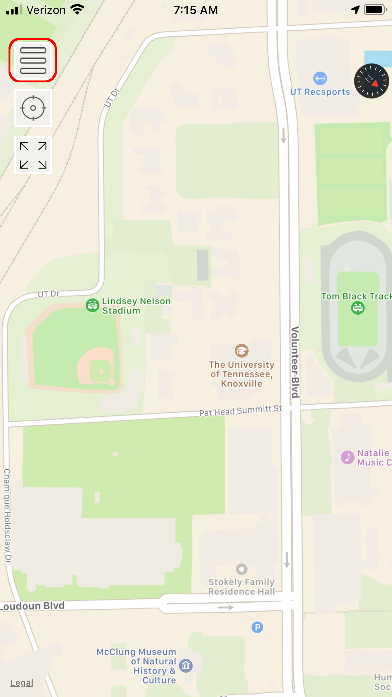
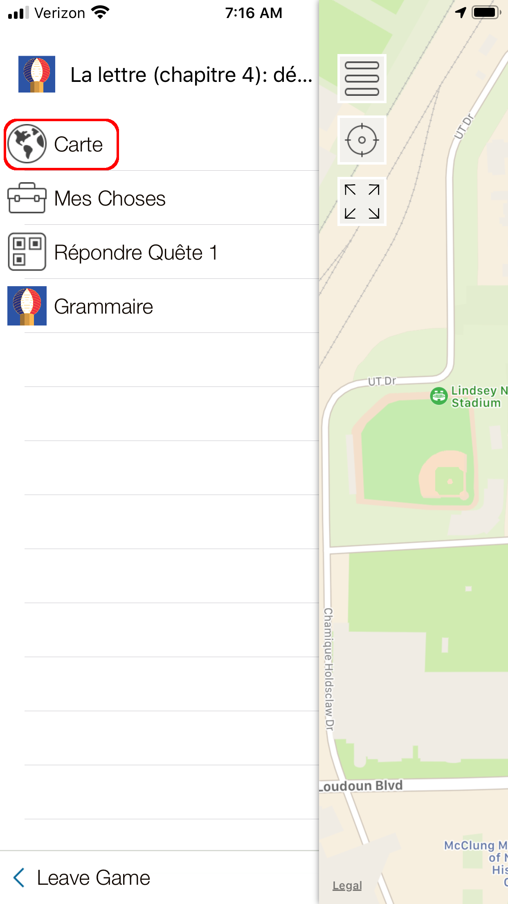
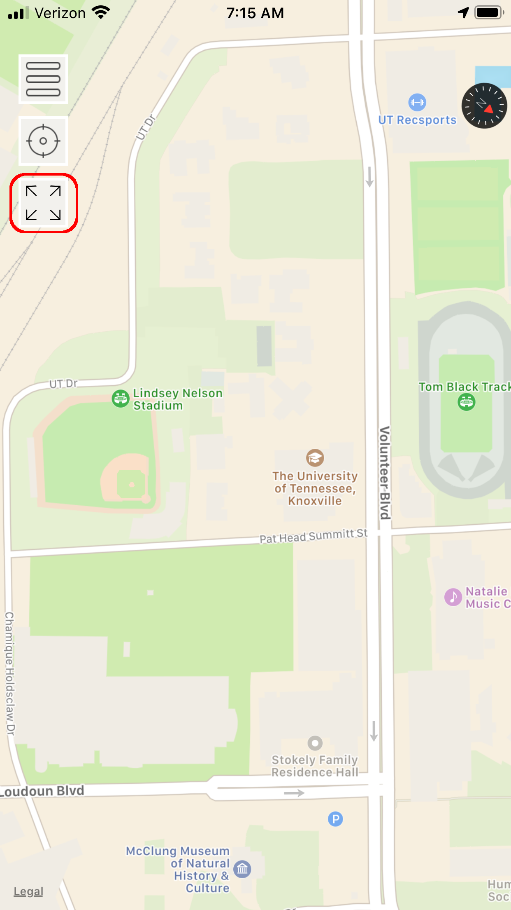

Bienvenue! Ce jeu utilise une plate-forme simple appelée Aris. Lisez les instructions:
Pour voir les pages, cliquez sur le bouton encerclé:
Dans ce jeu, votre personnage (character) est contrôlé par votre position à partir du gps. Pour voir où vous êtes, allez dans le page comme on le voit ici:
On peut cliquer sur ce bouton pour voir tous les endroits disponibles.
Tout au long du jeu, il y a différentes pages qui vous aideront à interagir avec le jeu ou à réviser la grammaire ou le vocabulaire. Cliquer sur ce bouton pour voir vos options.